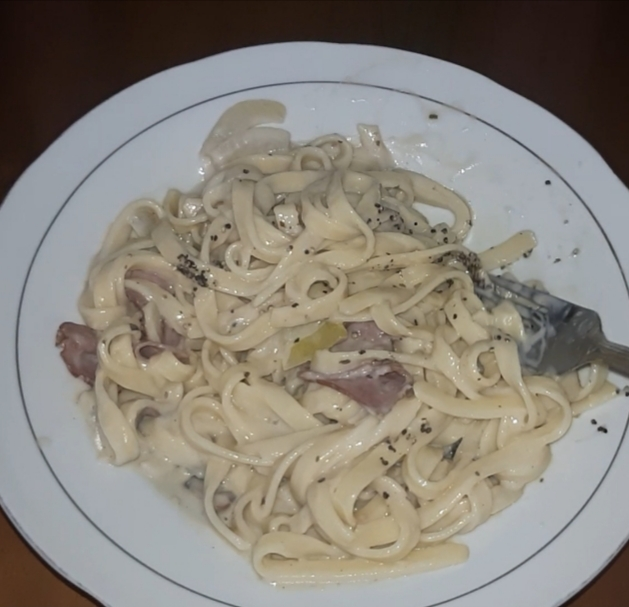

How to Make Alfredo Pasta

Ingridients
- Pasta
- 3 slice of Smoked beef, cut
- 3 Portobello Mushroom
- 500 ml water
- Salt
- Pepper
- ½ Minced Onion
- 3 garlic cloves, chop
- 3 tbsp Butter
- 150 ml Milk
- Alfredo sauce
Tools/Materials
- Stove
- Non-Stick Pan
- Spatula/Large Wooden Spoon
Steps
- Turn on the stove and then wait until the water boils.
- After the water boils, put the pasta into the pan.
- Cover the pan with the lid of the pan, wait for 45 minutes.
- After that, open the lid of the pan and turn off the stove.
- Drain the pasta and put them on the plate.
- Remove the boiled water into the sink.
- Turn the stove, and put the butter into the pan.
- Spread the butter until it melts.
- After the butter melts, put the garlic into the pan.
- Stir fry garlic until fragrant.
- Add smoked beef and then stir fry them with garlic and butter.
- Put Onion and Mushroom and Stir-fry them together.
- Gradually pour milk into the pan.
- Then put the pasta into the pan.
- Stir the pasta until it is mixed well.
- Add the Alfredo sauce and then stir with the large wooden spoon.
- Add salt and white pepper.
- Turn off your stove.
- Move your pasta into a plate.
- You can add the black pepper into your pasta.